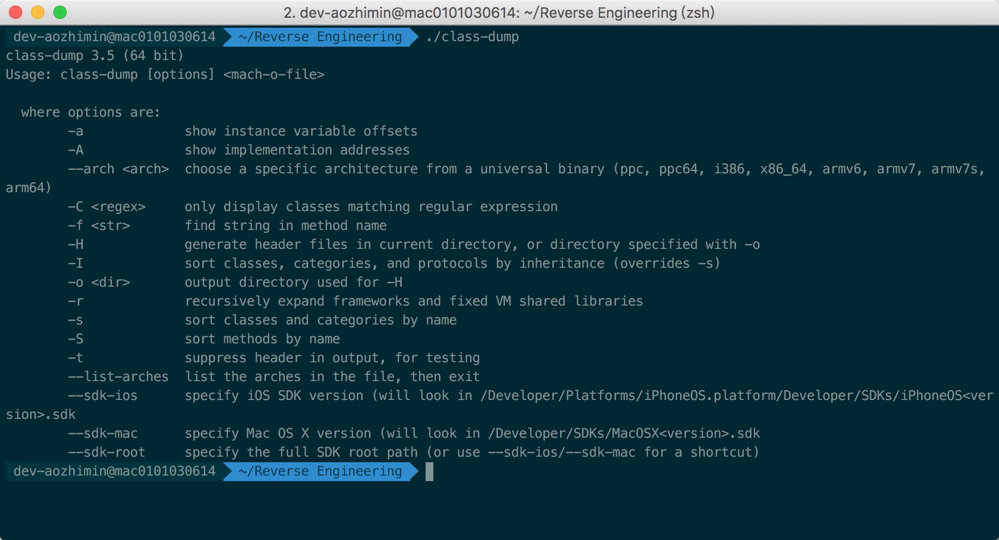
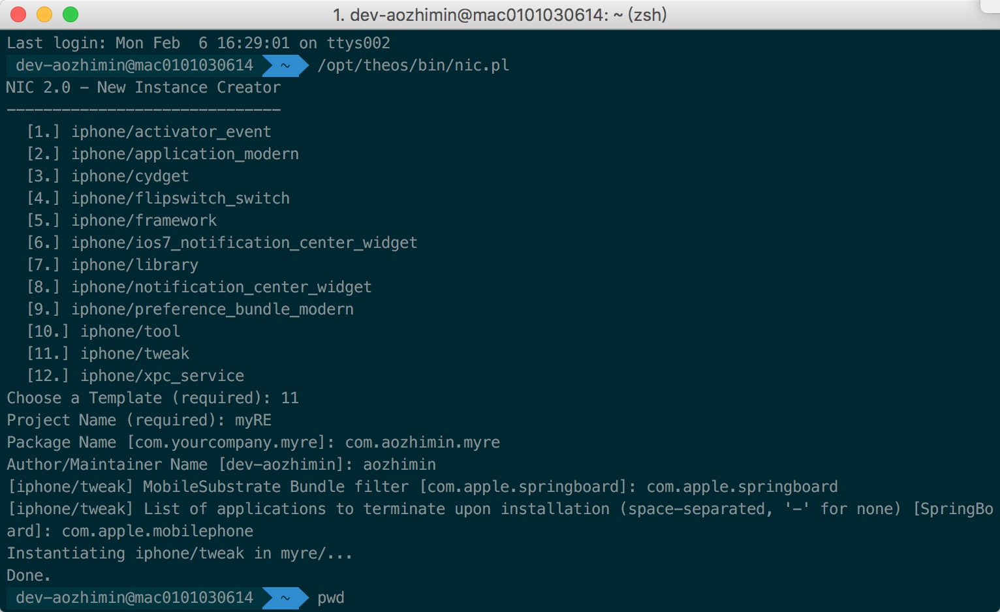
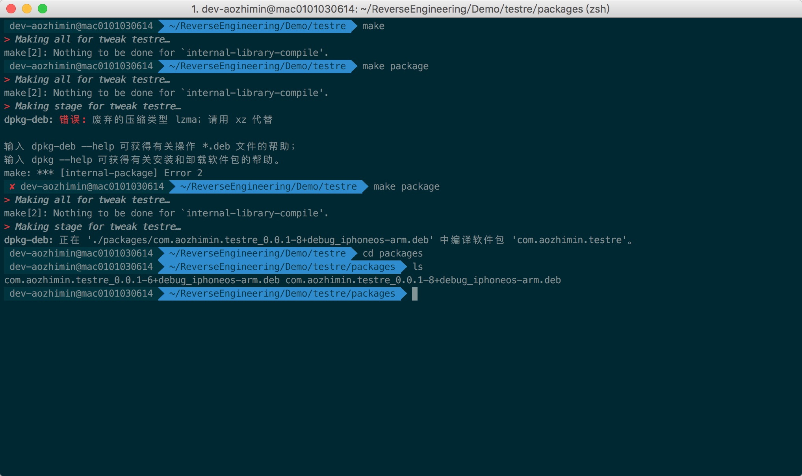
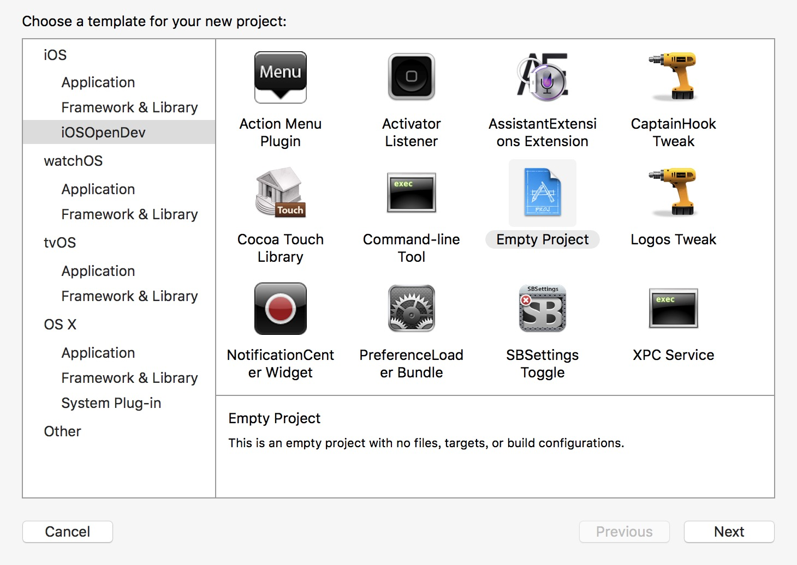
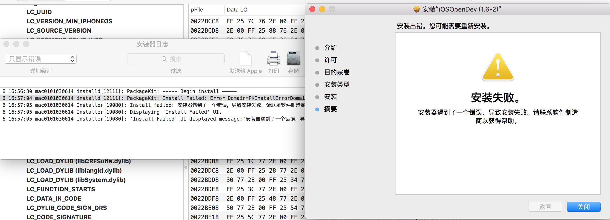

iOS 逆向工程
和
应用安全
@aozhimin
大纲
- iOS 逆向工程
- 简介
- 工具集
- iOS 逆向开发的套路
- iOS 应用安全
- 网络安全
- 本地文件和数据安全
- 代码安全
简介
- 什么是 iOS 逆向工程
- iOS 逆向工程的作用
- iOS 逆向分析方法
什么是 iOS 逆向工程
软件的逆向工程指的是通过分析一个程序或系统的功能、结构或行为，将它的技术实现或设计细节推导出来的过程。当我们因为工作需要，或是对一个软件的功能很感兴趣，却又拿不到它的源代码时，往往可以通过逆向工程的方式对它进行分析。
照着配方包饺子,是正向开发 吃着饺子推配方,是逆向工程
配方:API 调用顺序
效果:实现原理
iOS 逆向工程的作用
- 与安全相关的 iOS 逆向工程
- 评定安全等级
- 逆向恶意软件
- 检查软件后门
- 去除使用限制
- 与开发相关的 iOS 逆向工程
- 逆向系统调用
- 借鉴别的软件
- 提升个人能力和素养
固若金汤的城堡
上帝模式
iOS 逆向分析方法
- 网络分析
- 静态分析
- 动态分析
通过分析和篡改接口数据，可以有效的通过接口数据来控制客户端行为，常用的抓包工具有 tcpdump, WireShark, Charles 等，Windows平台有 Fiddler
静态分析法是在不运行行 iOS 应用的情形下，对应用进行静态分析的一种方法。比如获取应用的文件系统结构，本地文件的分析、使用反汇编工具（Disassembler，比如 Hopper Disassembler）查看内部代码，分析代码结构也是静态分析
动态分析法是在 iOS 应用的运行过程中进行动态分析的一种方法，通过调试来分析代码，获得内存的状态等等。通过动态分析法，可以在观察应用的文件、网络等。动态分析中还常使用调试器（Debugger，比如LLDB）分析应用的内部结构与原理。甚至可以使用工具（比如Cycript，后面会详细介绍该工具）动态修改内存，给内存打补丁。
工具集
- Mac 工具集
- iOS 工具集
Mac 工具集
- class-dump
- Thoes 和 iOSOpenDev
- Reveal
- IDA 和 Hopper Disassembler
- MachOView
class-dump
class-dump 是用来 dump 目标对象的 class 信息的工具。它利用 Objective-C 语言的 runtime 特性，将存储在 Mach-O 文件中的 @interface 和 @protocol 信息提取出来，并生成相应的 .h 文件
Theos
Theos 是一个基于 Unix 平台(OS X，iOS…)和大多数的 Linux 平台下进行越狱开发的集成开发环境，由 Dustin Howett 大神开发并开源到 GitHub 上，它的特点是搭建简单、Logos语法简单、编译发布简单
Theos
编译打包，这个过程可能会遇到问题，比如 make package 过程，可以通过 make package message=yes 输出详细错误信息
iOSOpenDev
iOSOpenDev 是基于 Theos 开发的，被整合到 Xcode 中，编译更方便，不用自己写 Makefile，另外同样提供了很多模版
iOSOpenDev 提供的模板
iOSOpenDev
安装过程中可能遇到的问题
IDA
IDA 是逆向工程中最负盛名的神奇之一，它可以把 class-dump 的点连成线，它支持 Windows、Linux 和 Mac OS X 的多平台反汇编器/调试器，功能非常强大
IDA 启动界面
IDA
IDA 主界面
Hopper Disassembler
Hopper，它有Mac OS X和 Linux 版本，能够反汇编32/64位 Mac，Linux，Windows 和 iOS 可执行文件。

Hopper Disassembler
Hopper 生成的伪代码
MachOView
MachOView 是可视化的 Mach-O 文件浏览器，它提供了浏览和编辑 Intel 和 ARM 二进制的功能
MachOView 主界面
MachOView
MachOView 查看加密信息
iOS 工具集
- iFile
- MobileTerminal
- AppCrackr dumpdecrypted 和 Clutch
- Cycript
- GDB 和 LLDB
- MachOView
iFile
iFile 是运行于 iOS 上的文件管理软件，它能实现文件的各类操作，甚至可以安装 deb 插件， 安装源是 BigBoss。
MobileTerminal
MobileTerminal 是开源的 iOS 版 Terminal，比较实用的场景是在没有计算机的情况下结合 Cycript 进行代码测试。
AppCrackr dumpdecrypted 和 Clutch
从 AppStore 获取 IPA 文件无法直接通过 class-dump 获取 .h 文件，也无法通过前面介绍的静态分析工具 IDA 进行反汇编。这种情况我们就需要对文件砸壳，AppCrackr 就是一款对 App 破解去壳的工具，AppCrackr 的成功率要远远高于 dumpdecrypted 和 Clutch。但正是由于它功能太过强大，引起公愤，导致其核心功能被迫关闭。
解密二进制文件
- 分析二进制文件以确定其加密部分的位置
- 用 LLDB 运行应用程序
- 将未加密部分转储到磁盘
- 复制一份原始的二进制文件
- 把上一步复制的二进制文件中的 cryptid 标识删除
- 把未加密的段复制到上一步的二进制文件中
解密二进制文件
dumpdecrypted 脱壳 App 的过程
Cycript
Cycript 是一门脚本语言，可以看做Objective-JavaScript，它可以很方便的帮忙测试函数和验证一下猜想。
GDB 和 LLDB
LLDB 是一个有着 REPL 的特性和 C++ ,Python 插件的开源调试器。LLDB 绑定在 Xcode 内部，存在于主窗口底部的控制台中。
- help
- expression
- 变量
- register write
- 断点
- script
iOS 逆向开发的套路
- 观察、猜测，寻找分析切入点
- 用 dumpdecrypted 砸壳
- 用 class-dump 导出 Objective-C 头文件
- 用 Cycript 定位目标视图
- 获取目标视图的 UIViewController 或 delegate
- 在 controller 的头文件中寻找蛛丝马迹
- 用 Hopper 和 LLDB 的组合还原调用逻辑
- 用 Theos 或 iOSOpenDev 编写插件
iOS 应用安全
- 网络安全
- 本地文件和数据安全
- 代码安全
网络安全
截获网络请求，破解通信协议并模拟客户端登录，伪造用户行为，对 iOS 用户数据造成危害
怎么防？
- 加密
- 使用二进制协议传输数据
本地文件和数据安全
移动端本地文件中常常会存储一些敏感信息，包括 NSUserDefaults，Plist，缓存和日志文件，而如果没有做好防御措施，就会造成数据泄露
怎么防？
- 尽量不存储敏感信息
- 数据加密
代码安全
- 字符串加密
- 类名方法名混淆
- 程序代码混淆
- 越狱检测
- 核心代码加密，用 C 或 C++ 实现